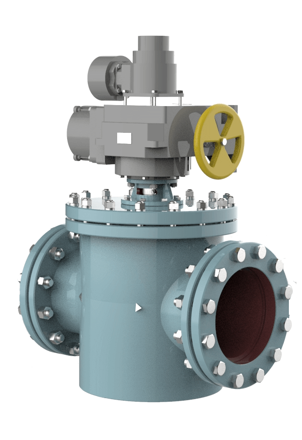
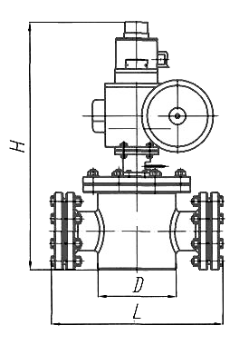
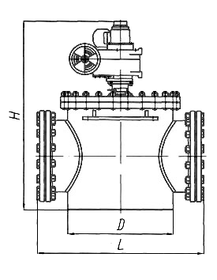

Топливная арматура: регулирующий клапан (РК) газовый
Клапан регулирующий газовый со встроенным приводом изготовлен в соответствии с ТУ 3742-001-27201850-95 и предназначен для регулирования расхода газообразного топлива при подаче последнего в топку котла с камерным сжиганием.
Клапан устанавливается в горизонтальном положении и может управляться как автоматически и дистанционно в соответствии с командными сигналами управляющих устройств, регулирующих расход газообразного топлива, так и вручную - непосредственно с исполнительного механизма.
Технические характеристики регулирующих клапанов (РК) газовых:
| 1. | Основная рабочая среда ГОСТ 5542 | природный газ |
| 2. | Тип присоединения | фланцевое |
| 3. | Тип конструкции | поворотно-золотниковый прямоточный |
| 4. | Нерегулируемый пропуск среды, не более | 1% |
| 5. | Электромеханизм |
для клапанов Ду80 и Ду100:
МЭОФ-100/25-0,25 99К (МЭОФ-100/25-0,25 IIВТ4-01) для клапанов Ду150-Ду300: МЭОФ-250/(25)63-0,25 99К (МЭОФ-250/63-0,25 IIВТ4-01) для клапанов Ду400 и Ду500: МЭОФ-630/63-0,25 IIВТ4-01 |
| 6. | Усилие на рукоятке ручного привода, Н | 100-250 |
| 7. | Полный угол поворота, град. | 90° |
| 8. | Потребляемое напряжение | 220/380 В, 50-60 Гц |
| 9. | Потребляемая мощность, Вт, | не более 250 |
| 10. | Степень защиты по ГОСТ 14254 | IP-54 |
| 11. | Механизм МЭОФ имеет взрывобезопасный уровень взрывозащиты, вид взрывозащиты "взрывонепроницаемая оболочка", маркировку взрывозащиты 1ExdIIBT4 и может применяться во взрывоопасных зонах согласно ГОСТ Р 51330.9 и ГОСТ 51330.13 и другим нормативно-техническим документам, определяющим применимость электрооборудования во взрывоопасных зонах, где возможно образование взрывоопасных смесей категории IIА и IIВ групп Т1, Т2, Т3, Т4, Т5 согласно ГОСТ Р 51330.5. | |
| 12. | Максимальная температура рабочей среды, °С (К) |
для углеводородных газов ГОСТ 5542 - плюс 60 (333)
для коксовых и доменных газов - плюс 100 (273) |
| 13. | Минимальная температура рабочей среды, °С (К) |
для углеводородных газов ГОСТ 5542 - минус 60 (213)
для коксовых и доменных газов - плюс 5 (278) |
| 14. | Температура окружающей среды ГОСТ 15150, °С (К) |
УХЛ2 (районы с умеренным и холодным климатом):
-плюс 40 (313) -минус 60 (213) Т2 (районы с тропическим климатом): -плюс 50 (323) -минус 10 (263) |
Технические данные регулирующих клапанов (РК) газовых:
| Обозначение | Dу, мм | Ру, МПа (кгс/см2) | ΔРу, кгс/см2 | μ | F см2 | *Масса, кг |
| ЭМИ 493725.037 (ЭК-205) | 80 | 1,6 (16) | Менее 6 | 0,8 | 47,8 | 45,5 |
| ЭМИ 493725.038 (ЭК-206) | 100 | 64 | 75 | |||
| ЭМИ 493725.039 (ЭК-207) | 150 | 163 | 95 | |||
| ЭМИ 493725.028 (ЭК-201) | 200 | 323 | 190 | |||
| ЭМИ 493735.027-01 (ЭК-202-01) | 250 | 499 | 417 | |||
| ЭМИ 493735.027 (ЭК-202) | 300 | 721 | 414 | |||
| ЭМИ 493735.030 (ЭК-203) | 400 | 1256 | 687 | |||
| ЭМИ 493735.026 (ЭК-204) | 500 | 1963 | 1148 |
* Масса дана без учета массы привода
Габаритные и присоединительные размеры регулирующих клапанов (РК) газовых:
РК Ду 80, Ду 100, Ду 150, Ду 200, Ду 250, Ду 300:

| Обозначение | Dу, мм | Размеры, мм | *Масса, кг | **Электромеханизм | ||
| D | H | L | ||||
| ЭМИ 493725.037 (ЭК-205) | 80 | 159 | 675 | 399 | 45,5 |
МЭОФ-100/25-0,25-99К
(МЭОФ-100/25-0,25-IIВТ4-01) |
| ЭМИ 493725.038 (ЭК-206) | 100 | 219 | 690 | 486 | 75 | |
| ЭМИ 493725.039 (ЭК-207) | 150 | 744 | 516 | 95 |
МЭОФ-250/63-0,25-99К
(МЭОФ-250/63-0,25У-IIВТ4-01) |
|
| ЭМИ 493725.028 (ЭК-201) | 200 | 325 | 877 | 608 | 190 | |
| ЭМИ 493735.027-01 (ЭК-202-01) | 250 | 465 | 1000 | 1003 | 417 | |
| ЭМИ 493735.027 (ЭК-202) | 300 | 832 | 414 | |||
* Масса без учета массы привода.
** Возможна установка другого электромеханизма
РК Ду 400, Ду 500:

| Обозначение | Dу, мм | Размеры, мм | *Масса, кг | ** Электромеханизм | ||
| D | H | L | ||||
| ЭМИ 493735.030 (ЭК-203) | 400 | 630 | 1144 | 1006 | 687 | МЭОФ-630/63-0,25У-IIВТ4-01) |
| ЭМИ 493735.026 (ЭК-204) | 500 | 820 | 1316 | 1222 | 1148 | |
* Масса без учета массы привода.
** Возможна установка другого электромеханизма